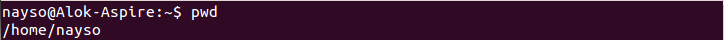
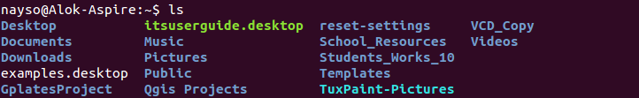

1. pwd - When you first open the terminal, you are in the home directory of your user. To know which directory you are in, you can use the “pwd” command. It gives us the absolute path, which means the path that starts from the root. The root is the base of the Linux file system. It is denoted by a forward slash( / ). The user directory is usually something like "/home/username".
2. ls - 2. ls — Use the "ls" command to know what files are in the directory you are in. You can see all the hidden files by using the command “ls -a”.
